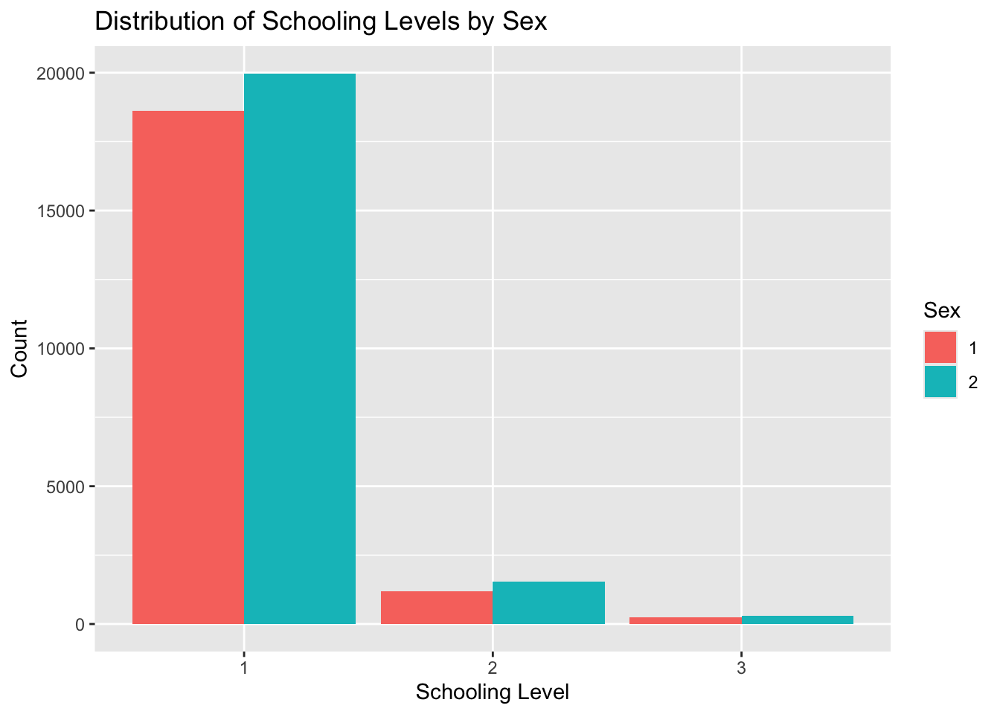

In this section, we will query a PUMS API and return a nicely formatted tibble.
Process:
Build the appropriate URL
Use httr:get() to contact the website
Write a function to parse the data and put it into a tibble for ease
#Build the URL\#https://api.census.gov/data/2022/acs/acs1/pums?get=SEX,PWGTP,MAR&SCHL=24pums_url <-"https://api.census.gov/data/2022/acs/acs1/pums?get=SEX,PWGTP,MAR&SCHL=24"#Get the URL data by contacting the websiteurl_info <- httr::GET(pums_url)str(url_info, max.level =1)
List of 10
$ url : chr "https://api.census.gov/data/2022/acs/acs1/pums?get=SEX,PWGTP,MAR&SCHL=24"
$ status_code: int 200
$ headers :List of 12
..- attr(*, "class")= chr [1:2] "insensitive" "list"
$ all_headers:List of 1
$ cookies :'data.frame': 1 obs. of 7 variables:
$ content : raw [1:937508] 5b 5b 22 53 ...
$ date : POSIXct[1:1], format: "2024-09-30 20:57:14"
$ times : Named num [1:6] 0 0.132 0.215 0.451 0.704 ...
..- attr(*, "names")= chr [1:6] "redirect" "namelookup" "connect" "pretransfer" ...
$ request :List of 7
..- attr(*, "class")= chr "request"
$ handle :Class 'curl_handle' <externalptr>
- attr(*, "class")= chr "response"
#Helper function to take output from GET() and turn it into a tibbleGetTibble<-function(url_info) {#Parse the content parsed <-fromJSON(rawToChar(url_info$content)) tibble_data <-as_tibble(parsed)#set the first row to the names of the columnsnames(tibble_data) <-as.character(unlist(tibble_data[1, ]))#remove the old first row tibble_data <- tibble_data[-1, ]return(tibble_data)}#testing functiontest <-GetTibble(url_info = url_info)
Warning: The `x` argument of `as_tibble.matrix()` must have unique column names if
`.name_repair` is omitted as of tibble 2.0.0.
ℹ Using compatibility `.name_repair`.
In this section, we will write a function that allows users to query the API and change modifiers, including:
numeric variables
categorical variables
geography information
QueryPums <-function(year =2022,numeric_vars =c("AGEP", "PWGTP"),categorical_vars =c("SEX"),geography_level ="All",geography_filter_value =NULL) {# Validate the yearif (!(year %in%2010:2022)) {stop("Year must be between 2010 and 2022") }# defining the numeric and categorical variable options num_var_options <-c("AGEP", "GASP", "GRPIP", "JWAP", "JWDP", "JWMNP", "PWGTP") cat_var_options <-c("FER","HHL","HISPEED","JWTRNS","SCH","SCHL","SEX")# making sure the variables asked for are in this set of variablesif (any(!numeric_vars %in% num_var_options)) {stop("Invalid numeric variables provided") }# making sure one numeric variable other than PWGTP is includedif (length(numeric_vars) <1) {stop("At least one numeric variable other than PWGTP must be provided") }# making sure the variables asked for are in this set of variablesif (any(!categorical_vars %in% cat_var_options)) {stop("Invalid categorical variables provided") }# making sure at least one categorical variable is providedif (length(categorical_vars) <1) {stop("At least one categorical variable must be provided") }# specifying the geographic level valid_geo_levels <-c("All", "Region", "Division", "State")if (!(geography_level %in% valid_geo_levels)) {stop("Geography level is invalid") }#Building api url api_url <-paste0("https://api.census.gov/data/", year,"/acs/acs1/pums?get=",paste(c(numeric_vars, categorical_vars), collapse =",") )print(api_url)# Geography level (append to API URL) geo_for <-""if (geography_level =="All") {# No additional parameters needed } elseif (geography_level =="Region") { geo_for <-"&for=region:*" } elseif (geography_level =="Division") { geo_for <-"&for=division:*" } elseif (geography_level =="State") {if (!is.null(geography_filter_value)) {# Correctly appending the geography filter value for state geo_for <-paste0("&for=public%20use%20microdata%20area:*&in=", geography_filter_value) } else { geo_for <-"&for=state:*" } } api_url <-paste0(api_url, geo_for)# Print URL for debuggingprint(paste("API URL:", api_url))# Query the API response <-GET(api_url)# Parse response data <-content(response, as ="text") %>%fromJSON(flatten =TRUE) %>%as_tibble()#set the first row to the names of the columnsnames(data) <-as.character(unlist(data[1, ]))#remove the old first row data <- data[-1, ]# convert numeric variables to numeric values num_vars_tibble <-intersect(numeric_vars, names(data)) data[num_vars_tibble] <-lapply(data[num_vars_tibble], as.numeric)# handle time variables, convert to middle of time period time_variables <-c("JWAP", "JWDP", "JWMNP") time_vars_tibble <-intersect(time_variables, names(data)) data[time_vars_tibble] <-lapply(data[time_vars_tibble], function(x) {as.numeric(x) /2 })# convert categorical variables to factors cat_vars_tibble <-intersect(categorical_vars, names(data)) data[cat_vars_tibble] <-lapply(data[cat_vars_tibble], as.factor)#adding a class of 'census' to the tibbleclass(data) <-c("census", class(data))return(data)}#testing this# test2 <- QueryPums(# year = 2021,# numeric_vars = c("AGEP", "PWGTP"),# categorical_vars = c("SEX"),# geography_level = "All"# )# head(test2)#str(test2)#testing with geography filter value test3 <-QueryPums(year =2021,numeric_vars =c("AGEP"),categorical_vars =c("SEX"),geography_level ="State",geography_filter_value ="state:13")
Next, we will write a function that allows the user to specify multiple years of survey data (and all the other options above)
This function will call the above single-year function as many times as needed and then combine the data into one final tibble. A year variable will be included in the final tibble.
MultiYearQP <-function(#paremeters accept multiple years and the other options already defined in QueryPumsyears =c(2021, 2022),numeric_vars =c("AGEP", "PWGTP"),categorical_vars =c("SEX"),geography_level ="All",geography_filter_value =NULL) {#initializing an empty tibble to store results multiapi_data <-tibble()# Loop through each year and query the datafor (year in years) {# Call the QueryPums function for each year single_year_data <-QueryPums(year = year,numeric_vars = numeric_vars,categorical_vars = categorical_vars,geography_level = geography_level,geography_filter_value = geography_filter_value )#add year column single_year_data <- single_year_data |>mutate(year = year)#combine data multiapi_data <-bind_rows(multiapi_data, single_year_data) }return(multiapi_data)}#Testing usage of functionmultiquery_test <-MultiYearQP(years =c(2022, 2021),numeric_vars =c("AGEP", "PWGTP"),categorical_vars =c("SEX"),geography_level ="All",geography_filter_value ="state:13")
Here, we will process the data in the tibble appropriately.
Going to write a generic function for summarizing, which first involves making the tibble created in part 1 have an additional class of ‘census’
Next, will write a custom summary function that gives us the means and std devs for our numeric variables and counts for our categorical variables
If not specified, will summarize the numeric variables except PWGTP because this is actually the number of people for a particular row
if not specified, will summarize all the categorical variables
#background- analyzing plot functions#plot.function #what is used for a class=function#getS3method("plot","data.frame") #what is used for a class=data frame #plot #generic method that specifies UseMethod("plot)#First, we will update the above function to create the API data and make the tibble have an additional class of 'census'. Rather than repeating the lengthy function in this chunk, I have appended it to the original function#Next, writing a custom summary function for class = census SummaryCensus <-function(tibble, numeric_vars=NULL, categorical_vars=NULL) { w_var<-"PWGTP"#default num and cat variables if (is.null(numeric_vars)) { numeric_vars <-setdiff(names(data), c(w_var, categorical_vars)) # Exclude PWGTP and cat variables using setdif, which takes the difference between the two vectors numeric_vars <- numeric_vars[sapply(data[numeric_vars], is.numeric)] }if (is.null(categorical_vars)) { categorical_vars <-names(data)[sapply(data, is.factor)] }#mean function - this will work for if there is or isnt PWGTP. if its present it will do a wed mean #function for mmean tib_mean <-function(x, w) {sum(x * w, na.rm =TRUE) /sum(w, na.rm =TRUE) }#function for std dev tib_sd <-function(x, w) { mean_x <-tib_mean(x, w)sqrt(sum(w * (x - mean_x)^2, na.rm =TRUE) /sum(w, na.rm =TRUE)) }#initialize list for results summaries<-list()#summarize num vars using the helper functions for (num_var in numeric_vars) { summaries[[num_var]] <-list(mean=tib_mean(tibble[[num_var]], tibble[[w_var]]),sd=tib_sd(tibble[[num_var]], tibble[[w_var]]) ) }#summarize cat vars using the helper functions and the table function to count categorical variables for (cat_var in categorical_vars) { summaries[[cat_var]] <-table(tibble[[cat_var]], useNA ="ifany") }return(summaries)}#testing usage summary_test <-SummaryCensus( multiquery_test,numeric_vars="AGEP",categorical_vars ="SEX")#display summary_test
#PlotCensus(data = multiquery_test, cat_var = "SEX", num_var = "AGEP", weight = # "PWGTP")#every time i try to render the document, it crashes at this line.
Part 3: Ending Example
Imagine we are interested in whether males or females are more likely to attend school in Alabama (and what school they have completed). To look at this question I will use the API query function to pull the “SCH” and “SEX” categorical variables (as well as the default numeric variables) for Alabama (state code = 01) and perform summary functions to see if there is a significant difference.
#Because I am interested in the level of schooling completed through college, I am going to filter to age >18, because most people under 17 haven't completed school simply due to age. wrap_example %>%filter(AGEP >=18) ->filtered_wrapwrap_summary <-SummaryCensus( filtered_wrap,numeric_vars="AGEP",categorical_vars =c("SEX", "SCH"))wrap_summary
#There's about an equal amount of males and females, which is good. #Because both variables are categorical, I am going to perform a Chi Squared test for independance.#First dropping the value of 0 for SCH because this is 'N/A (less than 3 years old)- having 0's in the table for the Chi Test (because everyone is atleast 18) will throw an error.wrap_table<- filtered_wrap %>%filter(SCH !=0)#drop unused levels from SCH variablewrap_table$SCH <-droplevels(wrap_table$SCH)#run Chi squared testchi_table<-table(wrap_table$SEX, wrap_table$SCH)chi_table
ggplot(wrap_table, aes(x = SCH, fill = SEX)) +geom_bar(position ="dodge") +labs(title ="Distribution of Schooling Levels by Sex",x ="Schooling Level",y ="Count",fill ="Sex")

With a p-value of 1.61e-05 we will reject a null hypothesis (p <0.05); there is statistically significant evidence that the distribution of schooling levels is associated with sex.